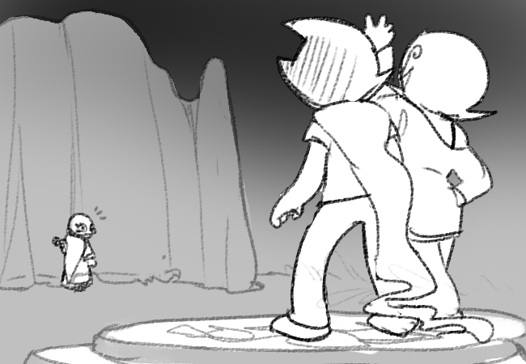
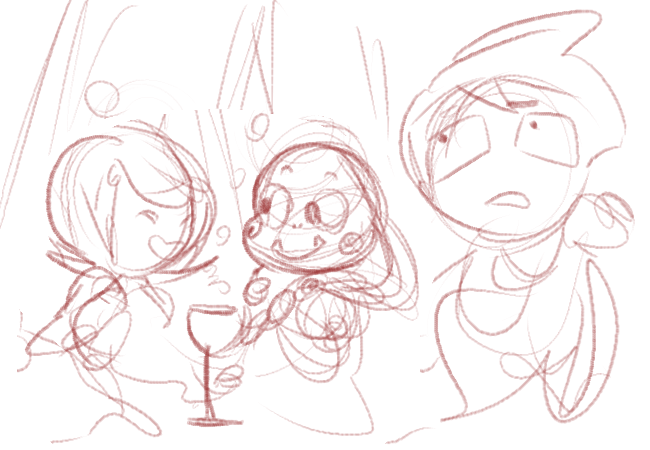
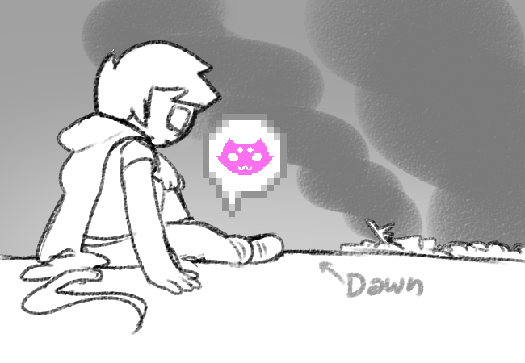

Panels 1-2
I really like the lighting here. Big fat sunlight shapes on the blues and greens. I also really like the bouncing message icon. If we’ve done that so far in hs^2 I don’t remember it.
(Artist’s note: eagle eyed readers will remember its appearance in our very first update, all the way back in 2019.)
Gina: The striking colors used on the previous update were such an inspiration to bring some peace after the chaos, so I imagined John being there for who knows how long, so the passage of time here is reflected on a dawn palette.

Panels 4-10
I also really like John and Roxy talking! One of my favorite interpersonal dynamics to write is people who used to be extremely close trying to work out what their new interaction style is, and how many old patterns they can afford to fall back into. Sometimes it’s super comforting, when things are going to shit, to talk to someone who knows you super well, even if you’re not close anymore.
It’s just… divorce. I love all flavors of it. And John, bless his heart, is going through like 50 angles of life shakeup at once, so it’s both interesting and scary to have him interact with his ex. What is left to panic about?? John will find it!
When John is speaking in ellipses in panel 9, just imagine him doing kombucha girl dot meme about the idea of gender. One of the classic emotions.
Also I love the artist’s concept for the wine glass shaped coffee mug. It’s very Roxy (or strilonde in general) to use a blatant reminder of a past addiction in your daily recovered life.
Please observe baby Harry Anderson on the wall… it’s very good.

Panels 11-12
It’s Callie! There’s honestly so many versions of Callie rolling around, but it’s nice to get back to ye olde, i.e. sort of knowledgeable and dorky, ready to describe the secrets of the universe to you, but only enough that you’re vaguely intrigued and confused rather than have any idea what the fuck is going on. She’s much like an author in that way, giving out info in drips and drabs in order to make sure the story stays on course.
Callie’s role in the story has always been deeply meta, to the point that initially she was even meant to reflect a section of the audience. She is, in fact, one of the most charitable and loving caricatures of a fangirl I think I’ve ever seen. It’s interesting that she’s moved from a watcher and dreamer, to a facilitator.
Anyway some shit is gonna go down.
Gina: I loved drawing these panels! Roxy’s morning attire seems way too laid back for what happened previously, but I imagined that she may wanted to get comfortable with that coffee (cherry scented!) and get a good talk with John. By the way! As a divorced couple, I thought that a marriage portrait could still be there, but the main focus for Roxy’s room should be Harry in his baby years ;_; ♥ cherishment that should be always present and not so close for Harry to get embarrassed from haha.